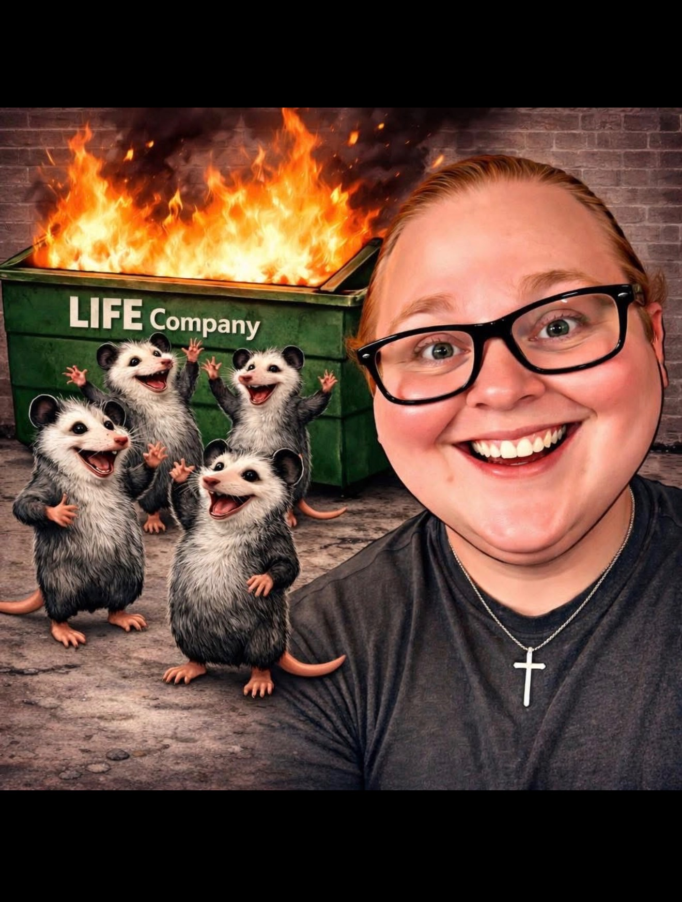

From dumpster fire to functional, fit & finding my purpose. My real, raw, unfiltered climb — no filters, no fake positivity.

For as long as I can remember, I've struggled with my weight. Not just the number on the scale, but the cycle — the yo-yo diets, the failed attempts, the "I'll start Monday" promises that turned into "I'll start next Monday."
I've had seasons of rock bottom. Moments where getting off the couch felt impossible. I've fought battles that had nothing to do with food and everything to do with survival — emotionally, mentally, and physically.
But here's what I know now: the fire didn't kill me. It's forging me.
This is my real, raw, unfiltered journey — from the dumpster fire I've been living in, to becoming a functional, fit woman who's finally found her purpose. Just the truth of what it looks like to rebuild yourself from the ground up.
I'm not starting from rock bottom. I'm starting from experience. And this time? I'm not stopping.
Opossums get knocked flat, play dead, and then get right back up and keep going. Honestly? Same. Life's been one flaming "LIFE Company" dumpster — and we're the ones still grinning in front of it.
Just the honest climb — the rock-bottom days and the small wins — from someone who's living it, not selling it.
Come climb with me. Cheer on the hard days, celebrate the wins, and watch a dumpster fire turn into something strong.
Follow on Facebook 🔥🦅 ← Back to the Moving Mountains family